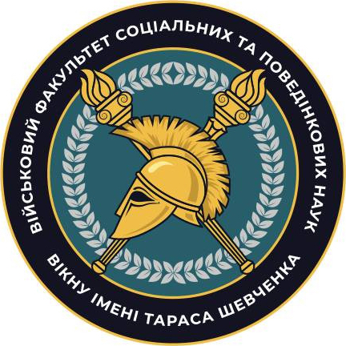
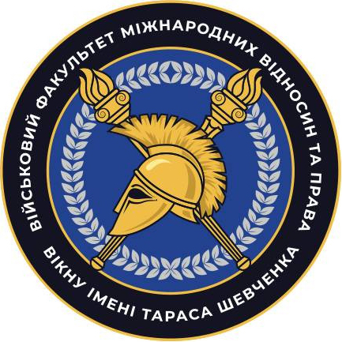
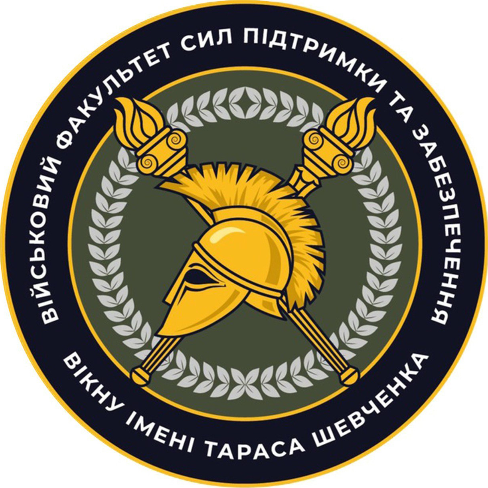
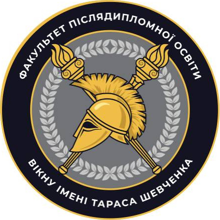

Бажаємо здоров'я!
Вітаємо на сторінці Військового інституту Київського національного університету імені Тараса Шевченка (далі – ВІКНУ) – сучасного міжвідомчого, багатопрофільного, інтегрованого військового навчального підрозділу провідного вищого навчального закладу України
ВІКНУ здійснює підготовку професіоналів з повною вищою освітою для:
Структура ВІКНУ

Військовий факультет соціальних та поведінкових наук
Кафедра військової психології та педагогіки
Кафедра створена в 1992 р. у складі факультету військово-фінансової підготовки. У 1997 р. відбувся перший набір курсантів за спеціальністю “Військова психологія”. Сьогодні кафедру очолює кандидат психологічних наук, доцент полковник Наталія МАСЬ. З метою вдосконалення професійної компетентності НПП кафедри систематично залучаються до психологічного супроводу військових, моніторингу ПТСР, проведення консультацій, участі в міжнародних тренінгах (США, Техас, Нью-Джерсі). Це дозволяє опановувати сучасні методи психодіагностики, кризової інтервенції та роботи з бойовим стресом — актуально в умовах воєнного стану.
НАВЧАЛЬНА РОБОТА
Кафедра забезпечує викладання військово-спеціальних дисциплін:
- Вступ до спеціальності
- Методологія військово-психологічних наукових досліджень
- Військова педагогіка та психологія
- Військова психологія
- Психологічне забезпечення військово-професійної діяльності підрозділів
- Гендерні аспекти військової психології
- Екстремальна психологія
- Загальна та військова педагогіка
- Індивідуальне консультування військовослужбовців та членів їх сімей
- Клінічна психодіагностика
- Психологічна допомога військовослужбовцям та членам їх сімей
- Прикладні аспекти військового полону
- Прикладні аспекти військової девіантології
- Психологія професійного самовдосконалення військового психолога
- Соціально-психологічні технології управлінської діяльності військового керівника
- Організація психологічного супроводу військових частин (з'єднань)
- Педагогічні технології в системі військової освіти та науки
для здобувачів першого (бакалаврського) та другого (магістерського) ступенів вищої освіти за спеціальність С4 “Психологія”.
З 2022 року у зв'язку із повномаштабним вторгненням агресора освітньо-професійні програми здобувачів першого (бакалаврського) та другого (магістерського) ступенів вищої освіти за спеціальність С4 “Психологія” були переглянуті і вдосконалені шляхом введення навчальних дисциплін:
- Психологія травмуючих ситуацій;
- Психологічна допомога особам з ПТСР;
- Прикладні аспекти військового полону;
- Прикладні аспекти інформаційної безпеки військовослужбовця;
- Психологія віктимності та суїцидальності;
- Технології роботи із залежними та співзалежними;
- Технології групової психотерапії;
- Технології когнітивно-поведінкової терапії;
- Психологія конфлікту;
- Нейропсихологія;
- Основи психотерапії;
- Основи травмофокусованої терапії;
- Основи психосоматики.
З метою вдосконалення фахових компетентностей випускники першого (бакалаврського) та другого (магістерського) ступенів вищої освіти за спеціальність С4 “Психологія” систематично залучаються до процесів реінтеграції військовослужбовців, звільнених з полону російського агресора; до процесів надання психологічної підтримки військовослужбовцям та членам їхніх сімей на базах реабілітаційних центрів; до проведення заходів психологічного супроводу особового складу під час виконання завдань за призначенням. При кафедрі функціонують: кабінет функціональної діагностики обладнаний комп’ютерами, з виходом до мережі Інтернет із встановленими програми “Лідер”, “PSY-D” та “PSY- Professional”, що використовується з метою формування у здобувачів практичних навичок з психологічного діагностування за допомогою спеціальних програмних продуктів, рекомендованих замовником для проведення заходів професійно-психологічного добору у військах та поглибленого соціально-психологічного вивчення особового кладу до та після участі у бойових діях; клас психологічної реабілітації оснащений електронними комплексами та для роботи з віртуальною реальністю – ноутбуками та VR-шоломами Meta Quest 2 128GB з преінстальованим ліцензійним програмним забезпеченням та курсом VR-відео, що дозволяє здобувачам освіти опановуватимуть техніки для удосконалення психологічної роботи у військах під час підготовки особового складу до бойових дій, психологічного супроводу під час виконання бойових завдань та відновлення особового складу після повернення з війни. З 2023 року на кафедрі проводяться курси професійної військової освіти, а саме: “Фаховий курс тактичного рівня L-1В (ВПс)”, “Командний курс тактичного рівня L-1С (ВПс)” та “Базовий курс тактичного рівня L-1А та фаховий курс тактичного рівня L-1В (ВПс)”. З 2017 року кафедра забезпечує проведення курсів підвищення кваліфікації військових фахівців за відповідним напрямом. Станом на поточний момент підвищення кваліфікацій ведеться за наступними програмами, а саме:
- Підвищення кваліфікації з питань організації та проведення заходів психологічної роботи з військовослужбовцями Збройних Сил України (ОПЗПР-ТР);
- Підвищення кваліфікації з питань професійно-психологічного відбору (ППП-ППВ);
- Підвищення кваліфікації з питань психологічної підготовки в навчальних центрах, центрах підготовки підрозділів Збройних Сил України (ПП-НЦ);
- Підвищення кваліфікації з питань організації освітнього процесу у військових ліцеях, ліцеях з посиленою військово-фізичною підготовкою (ООП-ВЛ);
- Підвищення кваліфікації з питань освітньої діяльності (ВІКНУ-ОД);
- Підвищення кваліфікації з питань методичної майстерності (ВІКНУ-ММ);
- Курс методичної підготовки (КМП-6).
У 2024 році науково-педагогічними працівниками кафедри розроблений онлайн-курс “Особливості роботи офіцера-психолога в умовах бойових дій” на платформі “PROMETHEUS”. В межах міжнародного співробітництва здобувачі освіти мають змогу слухати гостьові лекції та тренінги від відомих іноземних фахівців у сфері психології: від професора психології University of Miami (США), нейробіолога, доктора філософії Аміші ДЖА; від військового психолога Institute of Military Psychiatry University of Oslo (Норвегія) Тронда Івара ХЕГГЄ; від міжнародного тренера “Mindfulness Based Attention Training” Володимира ПАШКОВСЬКОГО тощо. А з 2019 року курсанти спеціальності С4“Психологія” приймають участь у некомерційній програмі Європейського союзу Еразмус, щодо обміну студентами та викладачами між університетами країн Євросоюзу.
НАУКОВА РОБОТА
З 2000 р. при кафедрі діє ад’юнктура. Дисертаційні дослідження ад’юнктів проводяться за спеціальностями “Психологія діяльності в особливих умовах”. Значну роботу як у підготовці науково-педагогічних кадрів, так і в організації й здійсненні навчально-виховного процесу проводять професори кафедри – доктор психологічних наук, професор, полковник запасу Сафін О.Д., доктор педагогічних наук, професор Кучерявий Андрій Олександрович. Основні напрями наукових пошуків кафедри:
- дослідження в сфері функціональної діагностики та психологічної реабілітації учасників бойових дій;
- обґрунтування норм фізичного та психоемоційного навантаження військовослужбовців під час бойових дій;
- проблема соціально-психологічної реадаптації учасників бойових дій;
- наукове обґрунтування впровадження сучасних педагогічних технологій в навчальний процес у ВВНЗ;
- сучасні психотехнології протидії негативному інформаційно-психологічному впливу в умовах гібридної війни;
- методи травмофокусованої терапії.
- вплив віртуальної реальності на учасників бойових дій під час психологічної реабілітації
МЕТОДИЧНА РОБОТА
2024 рік
- Всеукраїнська науково-практична конференція молодих вчених, ад’юнктів, слухачів, курсантів і студентів “Молодіжна військова наука у Київському національному університеті імені Тараса Шевченка” (м. Київ, 26 квітня 2024 р.)
- The 6 th International Scientific and Practical WEB-Forum (Київ – Харків, 26-29 березня 2024 р.)
- XІІ Всеукраїнська науково-практична конференція “Актуальні питання теорії та практики психолого-педагогічної підготовки майбутніх фахівців” (м. Хмельницький, 18 квітня 2024 р.)
- XІІ Всеукраїнська науково-практична конференція “Актуальні питання теорії та практики психолого-педагогічної підготовки майбутніх фахівців” (м. Хмельницький, 18 квітня 2024 р.)
- ХХ Міжнародна науково-практична конференція: “Військова освіта і наука: сьогодення та майбутнє” (м. Київ, 29 листопада 2024 р.)
- VIII International Scientific and Theoretical Conference: “Theory and practice of modern science: collection of scientific papers «SCIENTIA»” (Kraków, Republic of Poland: International Center of Scientific Research, October 11, 2024)
- The 6th International scientific and practical conference “The role of innovations in the transformation of the image of modern science” (Oslo, Norway, October 08-11, 2024)
- 7th International Scientific and Practical Conference “Experimental and Theoretical Research in Modern Science” (Toronto, Canada, October 16-18, 2024)
2025 рік
- VII Міжнародна наукова конференція “Міжгалузеві диспути: динаміка та розвиток сучасних наукових досліджень” (м. Полтава, 14.02.2025 р)
- VIII Міжнародна наукова конференція “Технології, інструменти та стратегії реалізації наукових досліджень” (м. Запоріжжя, 21.02.2025 р.)
- IV Міжнародна наукова конференція “Цифрове наукове суспільство: соціально-економічні, правові та міжнародні аспекти” (м. Дніпро 28.02.2025 р.)
- VI Міжнародна наукова конференція “Інноваційні тенденції сьогодення в сфері природничих, гуманітарних та точних наук” (м. Львів, 07.03.2025)
Публікації науково-педагогічних працівників кафедри:
- Охорона психічного здоровя військовослужбовців в умовах війни: у 2 т. / В. М. Мороз, В. О. Олійник, М. А. Коваль, Н.М. Мась та ін.; НДЦ ГП ЗС України; за заг. ред. В. В. Клочкова; рец. В. В. Стасюк; передм. В. В. Клочкова; дизайн В. П. Вітюка. Т. 1. Харків: Фоліо, 2024. 815 с.
- Охорона психічного здоров’я військовослужбовців в умовах війни: у 2 т. / В. М. Мороз, В.О. Олійник, М. А. Коваль, Н.М. Мась та ін.; НДЦ ГП ЗС України; за заг. ред. В .В. Клочкова; рец. В. В. Стасюк; дизайн В. П. Вітюка. Т. 2. Харків: Фоліо, 2024. 602 с.
- Психологічне забезпечення Збройних Сил України: навч. -метод. посіб. / за заг. ред. генерал-майора В. Клочкова. К.: НДЦ ГП ЗС України, 2024. 293 с.
- Мась Н.М. Корекція негативних психічних станів курсантів за допомогою технологій віртуальної реальності. Вісник Київського національного університету імені Тараса Шевченка. Військово-спеціальні науки, 2024. № 58(2(58), 50–54.
- Сторожук Н.А. Психологічні особливості формування іміджу сучасного підприємця. Scientific Journal «Psychology Travelogs», 2024, Issue 2. С.112-119.
- Storozhuk N.A. Psychological assistance to combat participants sign of amiboya psychic trauma. VII International Scientific and Practical Conference RECENT SCIENTIFIC INVESTIGATION held on February 26-28, 2024 in Oslo, Norway.
- Storozhuk N.A. The features of providing psychological assistance to combatants with signs of combat-related psychological trauma. V International Scientific and Theoretical Conference «Advanced discoveries of modern science: experience, approaches and innovations», February 23 2024; Amsterdam, Netherlands.
- Гоман Ю.О. Вплив емоцій та стресових ситуацій на прийняття рішень під час криз. Наукові перспективи. Серія Психологія 2025. №1(55). С. 1737-1746.
- Гаврюшенко В.В. Ментальне (психічне) здоров’я українських захисників: виклики, профілактика та перспективи реабілітації військовослужбовців в умовах російсько-української війни. Перспективи та інновації науки. 2024 № 12 (46)
- Клімішина Н.П. Психологічні чинники успішної командної роботи серед офіцерів у проблемних ситуаціях. Наукові перспективи: журнал. 2024, № 11(53) 2024. С.1283-1296
- Венгерчук А.Є. Гемблінгова залежність: поняття, види та фактори формування. Військова освіта і наука: сьогодення та майбутнє : зб. тез доповідей ХХ Міжнародної науково-практичної конференції, м. Київ, 29 листопада 2024 р. Київ : Військовий інститут Київського національного університету імені Тараса Шевченка, 2024. с. 160
- Герасимнюк І.О. Психопрофілактика девіантної поведінки учасників бойових дій. Збірник тез доповідей Всеукраїнської науково-практичної конференції молодих вчених, ад’юнктів, слухачів, курсантів і студентів «Молодіжна військова наука у Київському національному університеті імені Тараса Шевченка», м. Київ, 26 квітня 2024 р. Київ: Військовий інститут Київського національного університету імені Тараса Шевченка, 2024. С.56-57.
- Кучерявий А.О. Характеристика стану впровадження зарубіжного досвіду викладання навчальних дисциплін у Військовому інституті Київського національного університету імені Тараса Шевченка. Вісник Київського національного університету імені Тараса Шевченка. Військово-спеціальні науки. 2024. № 1(57). С. 15-25.
- Кучерявий А. Індивідуальний імідж як соціальний феномен у зарубіжній психології. Вісник Київського національного університету імені Тараса Шевченка. Військово-спеціальні науки. 2024. №60 (4(60)
- Кучерявий А.О. Таксономія Блума як методологічна основа визначення програмних результатів навчання у вищій військовій школі. Вісник Київського національного університету імені Тараса Шевченка. Військово-спеціальні науки 2024. №59(3(59). С. 5–13
- Кучерявий П.О. Методичні засади проведення навчальних занять при формуванні лідерської компетентності військового фахівця. Актуальні питання підготовки фахівців для сектору безпеки і оборони в умовах війни : матеріали Міжнародної науково-практичної конференції (м. Кропивницький, 19 квітня 2024 року). Кропивницький : ДонДУВС, 2024. С. 334–340. – URL: https://dnuvs.ukr.education/wp-content/uploads/2024/07/zbirnyk_materialiv_19_kvitnya_2024_roku-1.pdf
- Сафін О.Д. Діти вимушених переселенців в умовах війни: пошук ресурсів посттравматичного зростання. Вісник Київського національного університету імені Тараса Шевченка. Військово-спеціальні науки, 2024. № 60(4(60). С. 39–46.
- Сафін О.Д. Психологічна структура та типологія творчого Я керівника педагогічного колективу. Слобожанський науковий вісник. Серія: «Психологія», 2024. № 1.
- Сафін О.Д. Сучасні психофізиологічні методи професійно-психологічного відбору кандидатів на роботу. Psychology Travelogs, 2024. №2.
- Кожедуб О.В. Агресія: поняття, види, теорії . Scientific Collection «InterConf», (220): with the Proceedings of the 7th International Scientific and Practical Conference «Experimental and Theoretical Research in Modern Science» (October 16-18, 2024; Toronto, Canada) / comp. by LLC SPC «InterConf». Toronto: Aeropanzer, 2024. Р.127-129.
- Кожедуб О.В. Адаптація військовослужбовців до умов військової служби: поняття та види. Theory and practice of modern science: collection of scientific papers «SCIENTIA» with Proceedings of the VIII International Scientific and Theoretical Conference, October 11, 2024. Kraków, Republic of Poland: International Center of Scientific Research. Р.119-120.
- Кожедуб О.В. Суїцид: поняття та фактори ризику. The 6th International scientific and practical conference “The role of innovations in the transformation of the image of modern science” (October 08 – 11, 2024) Oslo, Norway. International Science Group. 2024. Р. 220-224.
- Левенець А.Є. Критичне мислення військовослужбовця як засіб протидії когнітивній війні противника. Збірник тез доповідей Всеукраїнської науково-практичної конференції молодих вчених, ад’юнктів, слухачів, курсантів і студентів «Молодіжна військова наука у Київському національному університеті імені Тараса Шевченка», м. Київ, 26 квітня 2024 р. Київ: Військовий інститут Київського національного університету імені Тараса Шевченка, 2024. С.80-82.
- Калишенков К.М. Психологічні механізми адаптації до стресу: стресори, стратегії копінгу та психологічний резилієнс. Збірник тез доповідей Всеукраїнської науково-практичної конференції молодих вчених, ад’юнктів, слухачів, курсантів і студентів «Молодіжна військова наука у Київському національному університеті імені Тараса Шевченка», м. Київ, 26 квітня 2024 р. Київ: Військовий інститут Київського національного університету імені Тараса Шевченка, 2024. С.55-56.
В контексті вдосконалення матеріально-технічного забезпечення освітнього процесу у 2023 році при кафедрі розгорнуто клас психологічної реабілітації, який оснащений 15 VR-шоломами з технологічною підтримкою від розробника, а також бібліотекою відеопрактик, спрямованих на навчання здобувачів освіти сучасним технологіям психологічної підготовки та психологічного відновлення особового складу із застосування засобів імітації віртуальної реальності. Загалом, використання цих технологій у роботі з особовим складом сприяє емпірично підтвердженому підвищенню показників психологічної стійкості та витривалості військовослужбовців та пришвидшує процес відновлення після впливу стрес-факторів бойових дій (ефективність доведена психологами). Під час навчання курсанти за допомогою VR відео матеріалів опановують техніки для стабілізації, заземлення, релаксації, емоційної саморегуляції стану військовослужбовців після участі в активних бойових діях.
Кафедра соціальної роботи у військах (силах)
Події останніх десяти років чітко продемонстрували необхідність посилення всіх напрямків розвитку ЗС України та інших підрозділів Сил оборони. Зокрема виникла гостра потреба посилення такого напрямку як соціальна робота з військовослужбовцями та членами їхніх родин. Важливим елементом формування нової системи соціального супроводу була організація підготовки фахівців відповідного напрямку. Завдяки спільній ініціативі начальника Головного управління морально-психологічного забезпечення та начальника Військового інституту КНУ ім. Т. Шевченка рішенням Міністра оборони України та Головнокомандувача ЗСУ в 2023 році на базі Військового інституту створено кафедру соціальної роботи у військах (силах) та розпочато підготовку фахівців за спеціальністю “Соціальна робота”. Основними завданнями майбутніх офіцерів буде організація та проведення заходів соціального супроводу, забезпечення реалізації соціальних прав та гарантій військовослужбовців, членів їх сімей, працівників ЗСУ; взаємодія з представниками територіальних центрів комплектування та соціальної підтримки, органами державної влади, місцевого самоврядування з питань сприяння у наданні адресної соціальної допомоги військовослужбовцям, які потребують додаткового соціального захисту, членам їхніх сімей, сім’ям військовослужбовців, які загинули, потрапили в полон, зникли безвісти.
НАВЧАЛЬНА РОБОТА
Освітня діяльність на кафедрі реалізується у вигляді навчально-виховного процесу, включає навчальну, виховну, методичну роботу та наукову і науково-технічну діяльність. Вона організовується відповідно до Положення про Військовий інститут та вимог навчальної частини Інституту. Основним видом діяльності Кафедри є навчальна робота. Вона організовується відповідно до Положення про Військовий інститут та вимог навчальної частини Інституту. Основні зусилля науково-педагогічних працівників кафедри спрямовані на:
- впровадження стандартів НАТО в освітній процес;
- вмінні застосовувати на практиці основні положення теорії соціальної роботи у військах (силах), у тому числі, за принципами NATO Social Services;
- підготовці майбутніх офіцерів, спроможних особисто надавати соціальну підтримку військовослужбовцям та членам їх родин у мирний та під час дії правового режиму воєнного стану;
- отриманні слухачами знань, необхідних для розуміння процесів планування, підготовки та реалізації управлінських рішень щодо соціального супроводу з урахуванням міжнародних стандартів та євроатлантичних процедур.
НАУКОВА РОБОТА
Науково-педагогічні працівники кафедри проводять наукові дослідження з наукової проблематики соціального захисту військовослужбовців та членів їх родин. НПП кафедри готують наукові статті, навчальні посібники, збірники документів, беруть участь в наукових заходах, які проводяться у Військовому інституті та університеті, а також на інших освітньо-наукових платформах. Молоді викладачі працюють над дисертаційними дослідженнями. Звітують про результати роботи на засіданнях кафедри. Курсанти залучаються до діяльності наукового гуртка, члени якого беруть участь в відомчих та міжнародних конференціях.
Кафедра поведінкових наук
Одним з основних напрямів діяльності Військового інституту Київського національного університету імені Тараса Шевченка є формування нової генерації військових лідерів для Збройних Сил України та інших військових формувань сектору безпеки та оборони, майбутньої еліти держави. Кафедра поведінкових наук була створена та почала своє функціонування в жовтні 2023 року. Кафедра призначена для проведення освітньої діяльності з військово-професійної підготовки здобувачів освіти, а також участі у науковій діяльності, що спрямовані на забезпечення формування військових лідерів за принципами та стандартами НАТО під час освітнього процесу на тактичному рівні професійної військової освіти (L-1,) у курсантів (слухачів) Військового інституту.
Основними завданнями кафедри є:
- формування нового стилю військового лідерства та лідерської поведінки;
- формування та розвиток особистісних компетентностейвійськового лідера;
- формування професійної культури військового лідера на основі євроатлантичних принципів та національно-історичних традицій;
- формування знань в контексті філософії війни, історії війн та воєнного мистецтва;
- впровадження досвіду військового лідерства, набутого за час збройної агресії російської федерації проти України;
- формування логічного мислення, розкриття аналітичних здібностей та розуміння філософії, як фундаментальної науки, а також філософії війни;
- формування культури сприйняття, відтворення та поширення інформації.
Кафедра військової політології
ІСТОРИЧНА ДОВІДКА
Одним із напрямів діяльності Військового інституту Київського національного університету імені Тараса Шевченка є підготовка кваліфікованих військових фахівців за спеціальністю С2 “Політологія” для Збройних Сил України та інших військових формувань сектору безпеки та оборони. Знання, які отримують випускники кафедри забезпечують глибоке розуміння політичних аспектів військової справи, сприяє розробці ефективних стратегій та прийняттю обґрунтованих рішень. Використовуючи знання воєнної політології, військові лідери можуть краще орієнтуватися у складних політичних ситуаціях, прогнозувати майбутні загрози та забезпечувати надійний захист держави. Базову освіту майбутні військові політологи здобувають на філософському факультеті Київського національного університету імені Тараса Шевченка.
Кафедра військової політології у складі Військового інституту створена 18 жовтня 2018 року на підставі спільної директиви Міністерства оборони та Генерального штабу ЗС України від 6 жовтня 2018 року.
Укомплектування кафедри науково-педагогічним складом розпочато 7 грудня 2018 року. З 16 січня 2019 року кафедра розпочала свою роботу. 1 жовтня 2023 року кафедра увійшла до складу військового факультету соціальних та поведінкових наук.
З метою передачі бойового досвіду здобувачам освіти, науково-педагогічні працівники кафедри постійно беруть участь у заходах із забезпечення національної безпеки й оборони, відсічі й стримування збройної агресії російської федерації.
НАВЧАЛЬНА РОБОТА
Кафедра забезпечує викладання наступних військово-спеціальних дисциплін:
-
ОПП Воєнна політологія
- Внутрішньо-комунікаційна робота та інформаційний супровід
- Вступ до спеціальності
- Воєнна політологія
- Воєнно-політична історія України
- Національно-патріотична підготовка в Збройних Силах України
- Державна інформаційна політика в сфері оборони
- Політична психологія
-
ОПП Осередок руху опору
- Основи руху опору
- Основи роботи з населенням
- Основи безпеки руху опору
- Основи оперативної психології
- Спеціальні засоби руху опору
- Розвідувально-інформаційна діяльність руху опору
- Тактика дій осередків руху опору
Крім того, іншими кафедрами військового інституту здійснюється викладання загальновійськових дисциплін, а філософським факультетом Київського національного університету імені Тараса Шевченка – дисциплін спеціальності.
З 2019 року науково-педагогічний склад кафедри та курсанти спеціальності “Політологія” беруть участь програмі Еразмус+, щодо обміну студентами та викладачами між університетами країн Євросоюзу.
З 2023 року науково-педагогічний склад кафедри та курсанти спеціальності “Політологія” беруть участь у програмі НАТО DEEP, що спрямована на зміцнення системи військової освіти країн-партнерів Альянсу, підвищення стандартів військової освіти, зокрема, шляхом реформування навчальних програм, впровадження сучасних методів навчання, а також професійного розвитку викладацького складу.
З 2025 року науково-педагогічний склад кафедри забезпечують підготовку фахівців за напрямком Руху опору ВОС-086000 (організація, підготовка, ведення та підтримання дій осередку руху опору).
Основні зусилля науково-педагогічних працівників кафедри спрямовані на:
- впровадження стандартів НАТО в освітньому процесі
- комплексне розуміння природи та значення воєнної політики як специфічної сфери, яка базується на стратегічних засадах безпекової та оборонної політики держави
- підготовку майбутніх офіцерів здатних організовувати та здійснювати інформаційний супровід запланованих заходів впливу на свідомість особового складу з метою подальшого формування національної ідентичності на основі національної воєнно-історичної спадщини, а також аналізувати суспільно-політичну обстановку в районі дислокації та під час виконання військами (силами) завдань за призначенням, прогнозувати воєнно-політичну обстановку
- підготовку офіцерів спроможних використовувати широкий спектр політологічних теорій, концептів і методів для професійної інтерпретації та змістовного аналізу безпекової та воєнної політики держави, міждержавних об’єднань та значних соціальних сил всередині держави відповідно до певного історичного контексту та сучасних геополітичних трансформацій
НАУКОВА РОБОТА
Починаючи з 2019 року при кафедрі військової політології функціонує ад’юнктура. Дисертаційні дослідження ад’юнктів проводяться за спеціальністю С2 “Політологія”.
Основні напрями наукових пошуків кафедри:
- дослідження в сфері сектору безпеки і оборони України;
- роль стратегічних комунікацій у здійсненні національної безпеки;
- аналіз досвіду забезпечення кібербезпеки в Збройних Силах України та країн-партнерів;
- аналіз сучасних загроз в інформаційному просторі, методів ведення інформаційних війн та засобів захисту інформаційної безпеки держави;
- сучасні методи реагування на дезінформацію в інформаційних каналах сфери оборони.
Науково-педагогічні працівники кафедри розробляють наукові статті, навчальні посібники, збірники документів, беруть участь в наукових заходах, які проводяться у Військовому інституті та університеті, а також на інших освітньо-наукових платформах.
Курсанти залучаються до діяльності наукового гуртка та беруть участь у відомчих та міжнародних науково-практичних конференціях.
МЕТОДИЧНА РОБОТА
По закінченню навчання випускники отримують ступінь вищої освіти “бакалавр” та “магістр”, кваліфікацію офіцера тактичного рівня, а також вміння та навички, що дають змогу:
- здійснювати воєнно-політичне прогнозування;
- проводити аналітичну роботу;
- забезпечувати стратегічні комунікації;
- формувати інформаційний контент, створювати комунікаційні стратегії, ПР матеріали, медіапродукти;
- організовувати взаємодію з місцевими органами влади, ЗМІ, громадськими та волонтерськими організаціями, релігійними об’єднаннями в районі виконання завдань за призначенням;
- виявляти та оцінювати основні напрямки інформаційно-психологічного впливу противника;
- оцінювати суспільно-політичну обстановку в районах виконання завдань;
- впроваджувати технології впливу на громадськість.

Військовий факультет міжнародних відносин та права
Кафедра військового права
Загальні відомості
Про кафедру
Кафедра військового права є структурним підрозділом військового факультету міжнародних відносин та права Військового інституту Київського національного університету імені Тараса Шевченка, головним завданням якого є підготовка в інтересах Збройних Сил України офіцерів тактичного рівня за напрямом підготовки D8 “Право”.
Навчання курсантів проводиться на базі:
- Військового інституту, де кафедра забезпечує викладання загальноправових та військово-правових дисциплін;
- Навчально-наукового інституту права Київського національного університету імені Тараса Шевченка з повним залученням його наукового та навчально-матеріального потенціалу.
Інтегроване навчання обумовлює високу якість освіти, забезпечує здобуття глибоких і ґрунтовних базових знань тими, хто навчається, формує готовність випускників стояти на варті законності та правопорядку у Збройних Силах України.
До навчального процесу залучаються представники Військової служби правопорядку у Збройних Силах України, Центрального управління цивільно-військового співробітництва Генерального штабу Збройних Сил України, юридичної служби Збройних Силах України, волонтерських та громадських організацій України, делегації Міжнародного Комітету Червоного Хреста, Датської Ради у справах біженців в Україні, місії ООН з прав людини, Центру з питань захисту цивільного населення у збройних конфліктах, Координаційного центру з надання правової допомоги, Регіонального центру прав людини та інші.
Освітньо-професійні програми, за якими здійснюється підготовка на кафедрі:
-
Замовник - Головне управління Військової служби правопорядку Збройних Сил України
- Освітній рівень "Бакалавр": "Правоохоронна діяльність в Збройних Силах України";
- Освітній рівень "Магістр": "Організація правозастосовної діяльності в Збройних Силах України".
-
Замовник – Центральне управління цивільно-військового співробітництва Генерального штабу Збройних Сил України
- Освітній рівень "Бакалавр": "Цивільно-військові відносини";
За час свого існування кафедра підготувала більше тисячі фахівців, абсолютна більшість з яких проходить військову службу на юридичних посадах в структурах Міністерства оборони України, Збройних Сил України, інших військових формуваннях, розвідувальних та правоохоронних органах України.
Наші партнери
З 2018 року представники кафедри військового права Військового інституту є учасниками підкомітету Військової поліції Багатонаціонального об’єднаного координаційного комітету з питань військового співробітництва та оборонного реформування. Завдяки цьому партнери з числа збройних сил країн-членів НАТО (Канада, Велика Британія, Латвія, Литва, Чехія, Данія, Польща, Бельгія та інші) надають допомогу у практичній підготовці курсантів у відповідності до стандартів військової поліції країн НАТО.
Завдяки партнерству курсанти та науково-педагогічні науково-педагогічний склад кафедри під керівництвом інструкторів з Великої Британії та Канади проходять навчання на курсах:
- Розширена домедична допомога в умовах бойових дій;
- Бойові дії у міській забудові;
- Застосування сили;
- Курс слідства;
- Базовий курс військового поліцейського;
- Курс лідерства.
Курсова підготовка здійснюється на базі 25 навчально центру Військової служби правопорядку Збройних Сил України (м. Львів).
За результатами успішного закінчення курсів особовий склад отримує сертифікати міжнародного зразка про готовність виконувати завдання у складі та взаємодії з підрозділами країн-членів НАТО.
Кафедрою досягнуто домовленість щодо проведення курсів дистанційного навчання для курсантів 3 та 4 курсів "Доктрина військової поліції за стандартами НАТО" та "Застосування військової поліції в операціях країн членів НАТО" на базі Центру досконалості Військової поліції НАТО (м. Бидгощ, Республіка Польща).
Крім того, методичну та консультативну допомогу кафедрі у навчанні курсантів надає Центр Сухопутних військ Збройних Сил Сполучених Штатів Америки імені Джона Ф. Кеннеді. Американськими партнерами кафедрі передано лекційний курс "Цивільно-військове співробітництво" за стандартами країн НАТО, програмне забезпечення для оцінки цивільного середовища. Фахівцями даного Центру з науково-педагогічними працівниками кафедри проведені інструкторсько-методичні заняття щодо порядку та особливостей проведення занять за даним курсом та використання програмного забезпечення в інтересах Збройних Сил України.
Курсанти та науково-педагогічні працівники кафедри приймали безпосередню участь в українсько-американських командно-штабних навчаннях "Rapid Trident 2019", "Rapid Trident 2020", "Rapid Trident 2021".
НАВЧАЛЬНА РОБОТА
ОПП Правоохоронна діяльність у Збройних Силах України
Метою професійної діяльності військового фахівця за ВОС 390600 (850600) "Правоохоронна діяльність в Збройних Силах України" є зміцнення законності, правопорядку та військової дисципліни у Збройних Силах України, забезпечення конституційних прав військовослужбовців з урахуванням професійної специфікації MPU OS 2018.
За умови обрання одного із вибіркових блоків дисциплін навчального плану освітньої програми (у відповідності до Професійного стандарту офіцера тактичного рівня Збройних Сил України (галузь знань D Бізнес, адміністрування та право, Спеціальність D8 Право, ВОС 850600 (390600) "Правоохоронна діяльність в Збройних Силах України"), складання всіх форм контролю, захисту практики та проходження підсумкових атестацій, рішенням екзаменаційної комісії курсанту присвоюється професійна кваліфікація – юрист, офіцер тактичного рівня.
Назви типових посад:
- офіцер відділення (відділу) запобігання, виявлення злочинів та інших правопорушень;
- офіцер групи (відділення, відділу) проведення службових розслідувань;
- офіцер групи (відділення, відділу) охорони, патрульно-постової служби та розшуку;
- офіцер режимної служби;
- офіцер групи (відділення, відділу) військової інспекції безпеки дорожнього руху;
- командир взводу (заступник командира роти) ВСП за напрямом діяльності.
Основні документи, які регулюють професійну (службову) діяльність:
- Конституція України
- Статути Збройних Сил України
- Кодекс законів про працю України
- Закон України "Про Збройні Сили України"
- Закон України "Про військовий обов'язок і військову службу"
- Закон України "Про Військову службу правопорядку у Збройних Силах України"
- Положення про проходження громадянами України військової служби у Збройних Силах України
- STANAG 2296 AJP-3.21 Allied Joint Doctrine for Military Police
- STANAG 2226 ATP-3.7.2 NATO Military Police Guidance and Procedures
- STANAG 2085 NATO Combined Military Police
- Військова керівна деталізована публікація Доктрина "Військова служба правопорядку у Збройних Силах України", ВКП10-00(34).01, затверджена НГШ ЗС України 22.10.2020
- Нормативно-правові акти Міністерства оборони України та накази (директиви) Головнокомандувача Збройних Сил України
ОПП Цивільно-військові відносини
Метою професійної діяльності військового фахівця за ВОС 850400 "Цивільно-військове співробітництво" є створення сприятливих умов для виконання покладених на Збройні Сили України завдань за призначенням, а також недопущення перешкоджання цій діяльності з боку місцевого населення у районах постійної дислокації військових частин та підрозділів Збройних Сил України, на шляхах переміщення військ (сил) та під час запровадження заходів правового режиму надзвичайного та воєнного стану, участі в стабілізаційних (антитерористичних) операціях, операціях з підтримання миру і безпеки.
За умови обрання одного із вибіркових блоків дисциплін навчального плану Освітньої програми (у відповідності до Професійного стандарту офіцера тактичного рівня Збройних Сил України (галузь знань D Бізнес, адміністрування та право, Спеціальність D8 Право, ВОС 850400 "Цивільно-військове співробітництво"), складання всіх форм контролю, захисту практики та проходження підсумкових атестацій, рішенням екзаменаційної комісії курсанту присвоюється професійна кваліфікація – юрист, офіцер тактичного рівня.
Назви типових посад
- офіцер підрозділу ЦВС (командування виду збройних сил, окремого роду військ (сил));
- офіцер підрозділу ЦВС ОК (ПВК, КМП);
- офіцер відділення ЦВС бригади (батальйону).
Основні документи, які регулюють професійну (службову) діяльність
- Конституція України від 28.06.1996 р. № 254к/96-ВР
- Кодекс законів про працю України від 10.12.1971 р. № 322-VIII
- Закон України від 06.12.1991 р. № 1934-XII “Про Збройні Сили України”
- Закон України від 25.03.1992 р. № 2232-XII “Про військовий обов’язок і військову службу”
- Закон України від 24.03.1999 р. № 548-XIV “Про Статут внутрішньої служби Збройних Сил України”
- Закон України від 24.03.1999 р. № 551-XIV “Про Дисциплінарний статут Збройних Сил України”
- Закон України від 24.03.1999 р. № 550-XIV “Про Статут гарнізонної та вартової служб Збройних Сил України”
- Закон України від 24.03.1999 р. № 549-XIV “Про Стройовий статут Збройних Сил України”
- Указ Президента України від 10.12.2008 р. № 1153/2008 “Про Положення про проходження громадянами України військової служби у Збройних Силах України”
- Наказ Міноборони України від 23.03.2017 р. № 164 “Про затвердження Інструкції про порядок виконання норм міжнародного гуманітарного права у Збройних Силах України”
- Військова керівна деталізована публікація Доктрина "Цивільно-військове співробітництво", ВКП 9-00(01).01, затверджена Головнокомандувачем Збройних Сил України 01.07.2020 р.
- Наказ Генерального штабу Збройних Сил України від 20.12.2017 р. № 446 “Про Положення про цивільно-військове співробітництво Збройних Сил України”
- Наказ начальника Генерального штабу – Головнокомандувача ЗС України від 02.04.2019 №131 “Про затвердження тимчасової настанови з цивільно-військового співробітництва у ході підготовки та застосування Збройних Сил України”
- Наказ начальника Генерального штабу – Головнокомандувача ЗС України від 24.04.2019 №159 “Про затвердження тимчасової інструкції з оцінки цивільного середовища”
- STANAG 2509 AJP-3-19 Allied Joint Doctrine for Civil-Military Cooperation (November 9, 2018)
- STANAG 2449 ATRAINP-2 Training in the Law of Armed Conflict (June 26, 2019)
- Нормативно-правові акти Міністерства оборони України та накази (директиви) Головнокомандувача Збройних Сил України.
Курси перепідготовки та підвищення кваліфікації
Кафедра військового права здійснює підвищення кваліфікації та перепідготовку військовослужбовців та працівників Збройних Сил України:
- Курси підвищення кваліфікації осіб офіцерського складу Військової служби правопорядку у Збройних Силах України;
- Курси підвищення кваліфікації осіб офіцерського складу за напрямом діяльності цивільно-військового співробітництва Збройних Сил України;
- Курси підвищення кваліфікації фахівців юридичної служби Збройних Сил України з права збройних конфліктів, операційного права;
- Курси перепідготовки та підвищення кваліфікації військовослужбовців офіцерського і сержантського складу з вищою освітою.
- Курси професійної військової освіти.
Навчальна практика
В Освітньо-професійних програмах "Цивільно-військові відносини" та "Правоохоронна діяльність в Збройних Силах України", а також у Навчальних планах передбачено проведення таких видів практичної підготовки:
- практика у сфері права, зокрема на базі юридичних служб органів місцевого самоврядування, органів законодавчої та виконавчої влади, підприємств, установ та організацій незалежно від форми власності, нотаріату;
- практика в судах, або в системі прокуратури, адвокатури;
- військове стажування за фахом на первинних посадах за спеціалізацією;
- навчальна практика за програмою, модуль “Бойова система виживання воїнів”;
- навчальна практика за програмою (Командир відділення);
- навчальна практика за програмою (Командир взводу).
Складником практичної підготовки за напрямом діяльності кафедри є військові (навчальні) практики та стажування на первинних посадах за спеціалізацією. Дані заходи проводяться починаючи з другого курсу навчання курсантів на базі територіальних управлінь, зональних відділів (відділень) Військової служби правопорядку Збройних Сил України, підрозділів цивільно-військового співробітництва оперативних командувань, корпусів та бригадної ланки.
Додаткова вогнева та тактико-спеціальна підготовка тих, хто навчається, здійснюється на базі 25 навчального центру та 138 центру спеціального призначення Військової служби правопорядку Збройних Сил України.
НАУКОВА РОБОТА
Наукові напрями досліджень кафедри складаються з урахуванням визначених інститутських тематик науково-дослідних робіт та кафедральних тем, обумовлених актуальністю проблем, що підлягають розробці, а також змісту навчальних програм дисциплін, викладання яких забезпечують викладачі кафедри.
Зокрема, колектив кафедри працює над одержанням нових знань щодо розвитку воєнної організації держави, сектору безпеки і оборони, теоретичних основ будівництва і розвитку Збройних Сил, закономірностей цивільно-військових відносин та захисту цивільного населення у збройних конфліктах, організаційно-правових аспектів правоохоронної діяльності у Збройних Силах України тощо.
Кафедра активно бере участь у щорічних науково-практичних конференціях інституту, забезпечуючи роботу секції актуальних проблем військового права та права національної безпеки, а також у наукових конференціях, що проводять інші заклади вищої освіти. Крім того, на підставі звернень органів військового управління, військових частин, військових навчальних закладів, установ та організацій кафедра надає наукові висновки та рецензії з правових питань.
Науково-педагогічний склад кафедри регулярно виступає в якості рецензентів та опонентів під час проведення захисту дисертацій на здобуття наукових ступенів доктора філософії та доктора наук.
На основі індивідуальних досліджень викладачів кафедри публікуються наукові та навчально-методичні праці.
Кафедра спеціальної мовної підготовки
Внаслідок реорганізації кафедри військового перекладу та спеціальної мовної підготовки наприкінці 2018 року та з метою оптимізації вивчення англійської мови курсантами немовних спеціальностей було утворено кафедру спеціальної мовної підготовки (кафедра що забезпечує).
Основні завдання
- організація та проведення освітньої, методичної та наукової діяльності для забезпечення викладання англійської мови курсантам немовних спеціальностей, які виконують освітньо-професійні програми підготовки фахівців ступенів вищої освіти «бакалавр» та «магістр» за спеціальностями C2 Політологія; C4 Психологія; C7 Журналістика; D2 Фінанси, банківська справа, страхування та фондовий ринок; D8 Право; G18 Геодезія та землеустрій.
- проведення мовного тестування та видача сертифіката відповідно до стандарту НАТО СТАНАГ – 6001 з метою визначення рівня сформованості навичок і вмінь курсантів із чотирьох базових видів мовленнєвої діяльності, а саме: аудіювання, говоріння, читання та письма.
Дисципліни кафедри
- Іноземна мова (загальний, загальновійськовий та спеціальний курс);
- Інтенсивний мовний курс за напрямом Military Police;
- Іноземна мова в професійній діяльності.
Кафедра військового перекладу
Кафедра інформаційно-аналітичних технологій

Військовий факультет сил підтримки та забезпечення
Кафедра фінансового забезпечення військ
Кафедра автомобільної підготовки
Кафедра геоінформаційних систем і технологій
Кафедра військової журналістики
